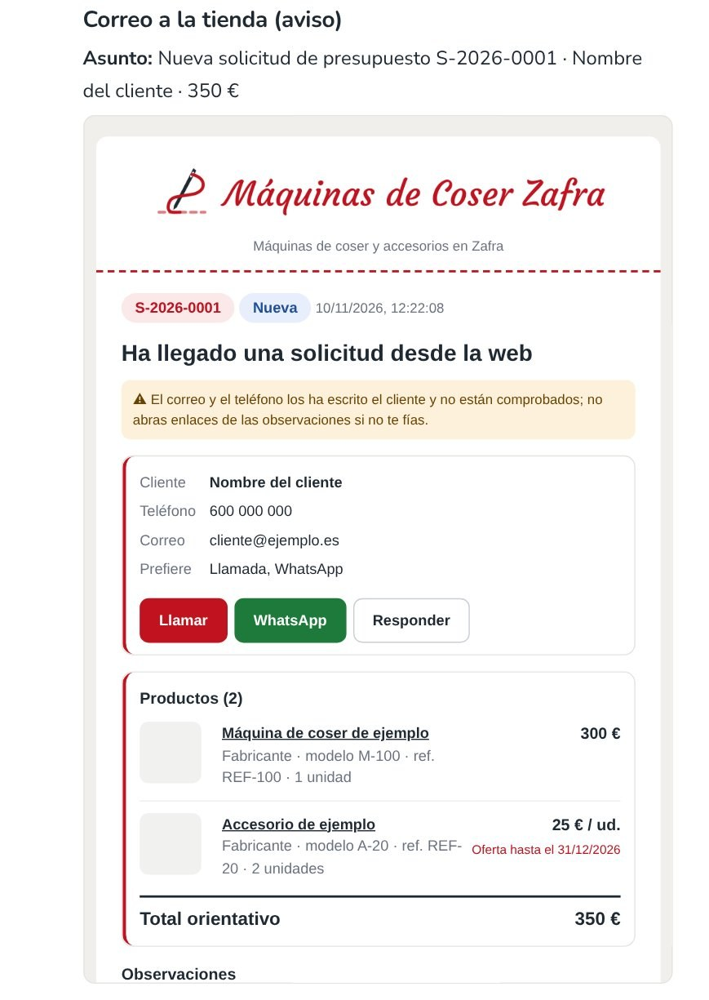
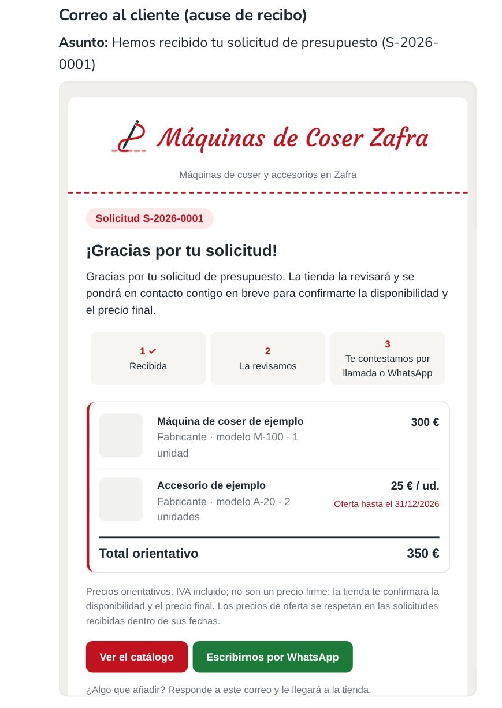
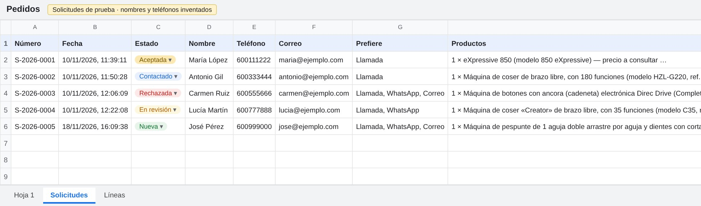
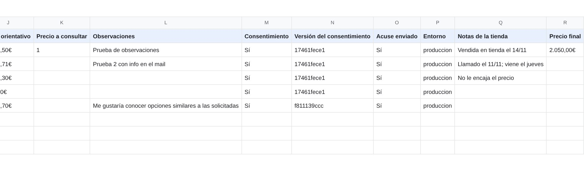
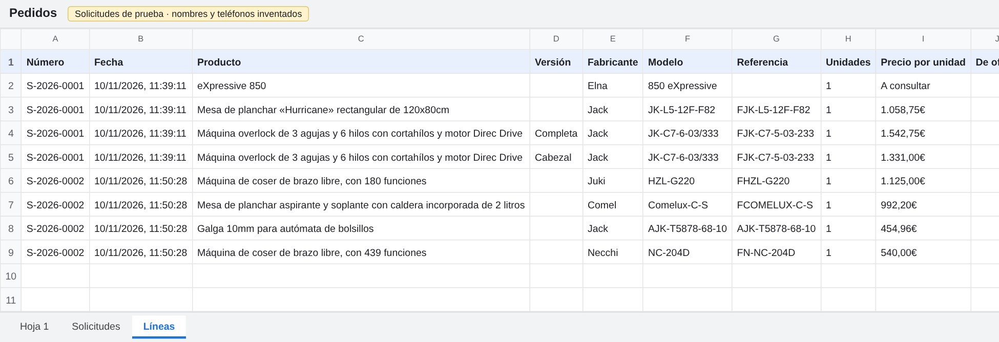
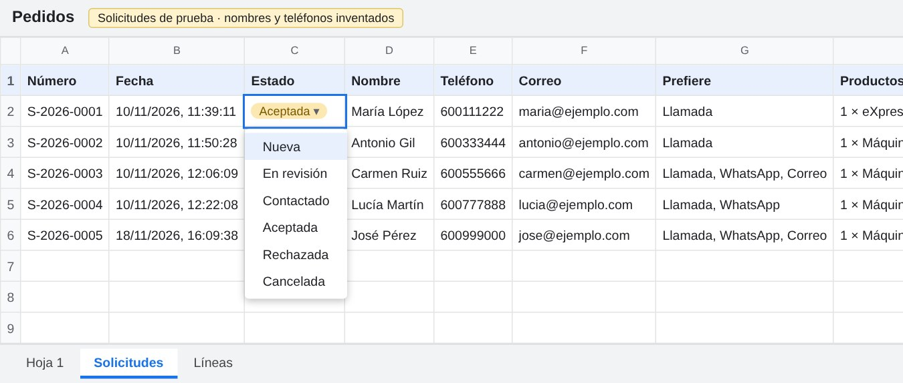

Máquinas de Coser Zafra
Guía de solicitudes de presupuesto
Qué hacer cuando un cliente envía una solicitud desde la web: el correo de aviso, la hoja de Google, cómo atenderla y cuándo borrar los datos.
Borrador · Noviembre de 2026
Cuando un cliente envía una solicitud de presupuesto desde la web pasan tres cosas a la vez, sin que tengáis que hacer nada:
Vuestro trabajo es contestar al cliente, apuntar en la hoja cómo va cada solicitud y, pasado un tiempo, borrar los datos de las que no acaban en venta.
Llega al correo de la tienda con el asunto «Nueva solicitud de presupuesto S-2026-…», el nombre del cliente y el total orientativo.

Contiene:
Al mismo tiempo, el cliente recibe este correo de acuse de recibo. Así sabe que su solicitud ha llegado y tiene su número por si os llama.

Por seguridad, ese correo nunca incluye nada escrito por el cliente (ni su nombre ni sus observaciones): solo el número y los productos.
Todas las solicitudes quedan apuntadas en una hoja de cálculo de Google, en el Google Drive de la cuenta de la tienda. Se abre desde el enlace del correo de aviso o desde drive.google.com. Tiene tres pestañas abajo: Hoja 1 (vacía, no se usa), Solicitudes y Líneas.

| Columna | Qué es |
|---|---|
| Número | El número de la solicitud. Es el mismo que tiene el cliente en su correo. |
| Fecha | Cuándo llegó. Cuenta para respetar el precio de oferta. |
| Estado | Cómo va la solicitud. Lo cambiáis vosotros (capítulo 4). |
| Nombre, Teléfono, Correo, Prefiere | Los datos del cliente y cómo prefiere que le contestéis. |
| Productos, Nº de productos, Total orientativo | Resumen de lo que pide. El detalle está en la pestaña «Líneas». |
| Precio a consultar | Productos que no tenían precio en la web. |
| Observaciones | Lo que ha escrito el cliente. |
| Consentimiento, Versión, Acuse enviado, Entorno | Datos técnicos: que aceptó las condiciones, qué textos aceptó y si se le envió el correo. No hay que tocarlos. |
| Notas de la tienda | Para vosotros: «Llamado el 24/11, viene el jueves»… Lo rellenáis vosotros. |
| Precio final | El precio que acordéis, si hay venta. Lo rellenáis vosotros. |

Cada producto de cada solicitud, con su fabricante, modelo, referencia, unidades, precio, si estaba en oferta, la nota del cliente y el enlace a su ficha en la web. Una solicitud con tres productos ocupa tres filas, todas con el mismo número.

Mira qué productos pide, cuántas unidades y si ha dejado observaciones o notas.
Pulsa en la casilla Estado de su fila y elige en la lista. Así se sabe que alguien la está mirando.

Mira si tenéis los productos o en cuánto tiempo llegarían, y el precio final.
Usa la forma que ha elegido (columna «Prefiere»): Llamar, WhatsApp o Responder por correo, con los botones del correo de aviso. Intenta contestar pronto: en la web dice que la tienda le contestará «en breve».
En Notas de la tienda: «Llamado el 24/11; viene el jueves a verla», «Le he mandado el presupuesto por WhatsApp»…
Cuando se decida:
| Estado | Cuándo ponerlo |
|---|---|
| Nueva | Se pone sola al llegar. Nadie la ha mirado todavía. |
| En revisión | La estáis mirando: disponibilidad, precio… |
| Contactado | Ya habéis hablado o escrito al cliente y estáis esperando su respuesta. |
| Aceptada | Hay venta. Rellenad el «Precio final». |
| Rechazada | No hay venta: no le interesa o no llegáis a un acuerdo. |
| Cancelada | El cliente la anula, no contesta, o es falsa o publicidad. |
Por la ley de protección de datos, los datos de los clientes no se pueden guardar para siempre. La política de privacidad de la web dice cuánto tiempo los guardáis.
| Solicitud | Qué hacer |
|---|---|
| Sin venta (Rechazada, Cancelada o sin respuesta) | Borrarla a los 6 meses de la fecha de la solicitud: la fila de «Solicitudes», sus filas de «Líneas» y el correo de aviso. |
| Con venta (Aceptada) | Guardarla. Las ventas se conservan por obligaciones fiscales y por la garantía (4 a 6 años, lo que diga vuestra gestoría). |
| El cliente pide que borréis sus datos | Borrarlos en cuanto lo pida (salvo una venta que haya que conservar) y contestarle que ya está hecho. |
| Falsas o publicidad | Borrarlas cuando las veáis. |
En la pestaña Solicitudes, mira la columna Fecha: las de hace más de 6 meses que no estén «Aceptada».
Pulsa con el botón derecho del ratón sobre el número de la fila (a la izquierda del todo) y elige «Eliminar fila».
En la pestaña Líneas, borra igual todas las filas con ese mismo número de solicitud. Puede haber varias.
En el correo de la tienda, busca el número (por ejemplo, S-2026-0003), borra el aviso y las respuestas que hayáis intercambiado con el cliente, y vacía la papelera. Haz lo mismo con los mensajes de WhatsApp de esa solicitud si ya no los necesitáis.
Durante las vacaciones las solicitudes siguen llegando. Tienes dos opciones, las dos desde el panel (ver el Manual del panel):
En los dos casos: Guardar → Listo → Publicar, y esperar unos minutos.
| Qué pasa | Qué hacer |
|---|---|
| No ha llegado el correo de aviso. | Mira en la carpeta de spam. Aunque no llegue el correo, la solicitud está apuntada en la hoja: revísala de vez en cuando. |
| Un cliente dice que no le ha llegado el correo de acuse. | Que mire en su carpeta de spam. Si sabe el número, búscalo en la hoja; si no, búscalo por su nombre. |
| Un día llegan muchísimas solicitudes. | La cuenta gratuita de Google solo manda unos 100 correos al día. Si se pasa, ese día dejan de enviarse avisos o acuses, pero todas las solicitudes se guardan en la hoja. Si parecen falsas, avisa a Víctor. |
| Una solicitud es claramente falsa o publicidad. | Estado «Cancelada» y bórrala (capítulo 5). No contestes ni abras sus enlaces. |
| He borrado una fila sin querer. | En Google Sheets: Editar → Deshacer (o Ctrl+Z) enseguida. También se puede recuperar en Archivo → Historial de versiones. |
| Han dejado de llegar solicitudes y en la hoja tampoco aparecen. | Avisa a Víctor: puede que algo de la conexión entre la web y la hoja haya fallado. La web lo comprueba sola cada mañana y le avisa. |